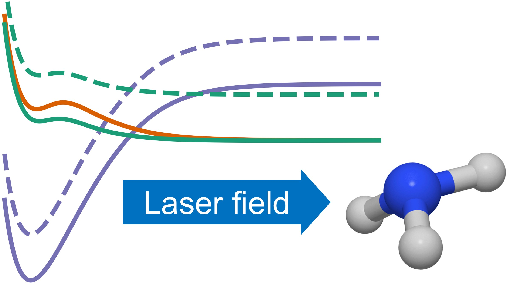
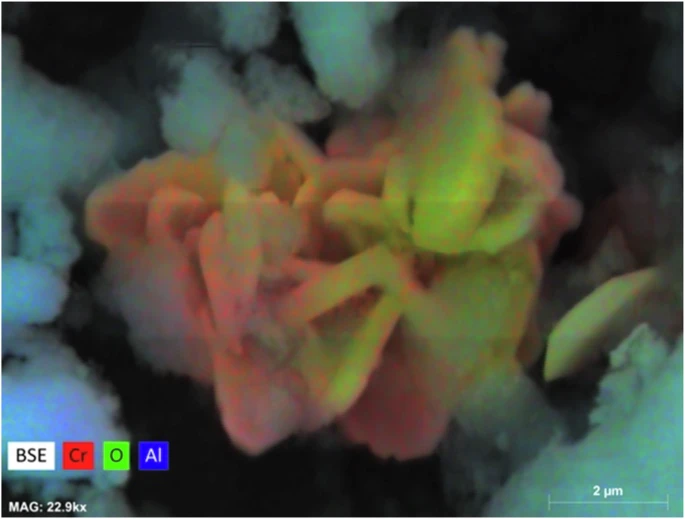
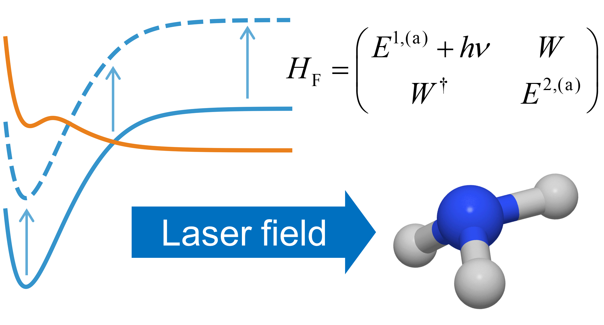
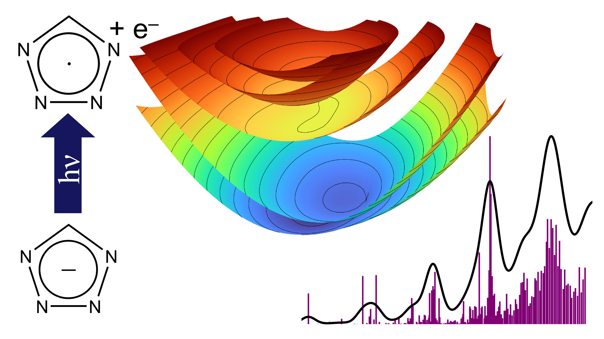
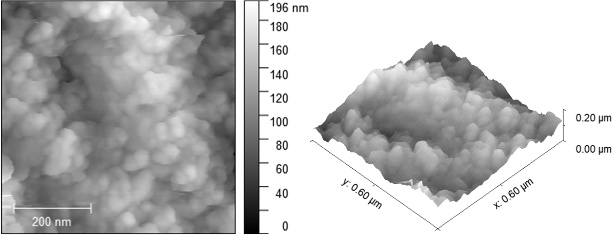
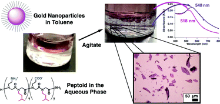
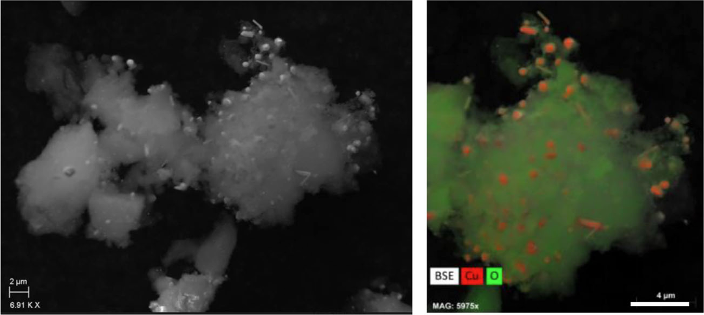
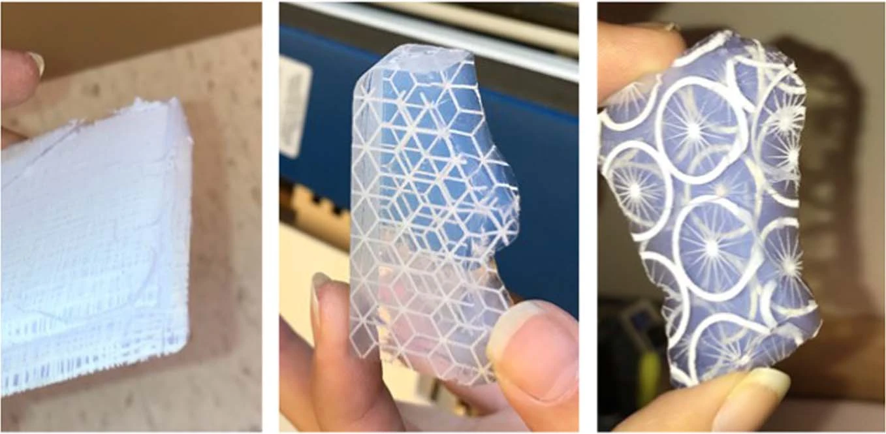

Peer-reviewed journal articles
-
Intersystem crossing in the molecular channel of ammonia
photodissociation manipulated by an external laser field
C. Avanessian.
Article
J. Chem. Phys. 2025, 163 (8), 084311. -
Chromia-alumina catalytic aerogels prepared via rapid
supercritical extraction
F. T. Fitzgerald, C. Avanessian, J. P. Santos, A. M. Anderson, B. A. Bruno, and M. K. Carroll.
Article
J. Sol-Gel Sci. Technol. 2025. -
Floquet-Engineered Photodissociation Simulated Using Coupled
Potential Energy and Dipole Matrices
C. Avanessian, Y. Wang, and D. R. Yarkony.
Article
J. Phys. Chem. Lett. 2024, 15 (39), 9905–9911. -
The anion photoelectron spectrum and diabatization of
tetrazolyl
C. Avanessian and D. R. Yarkony.
Article
J. Chem. Phys. 2024, 160 (21), 214312. -
Effect of slurry processing on the properties of catalytically
active copper-alumina aerogel material for applications in
three-way catalysis
A. M. Anderson, B. A. Bruno, J. Santos, C. Avanessian, and M. K. Carroll.
Article 🔓 Open access link
J. Sol-Gel Sci. Technol. 2022, 102 (2), 422–436. -
Synthesis and characterization of plasmonic peptoid
nanosheets
E. J. Robertson, C. Avanessian, J. R. Davis, A. K. Mahony, and E. V. Whitney.
Article 🔓 Open access link
Chem. Comm. 2021, 57 (22), 2748–2751. -
Effect of Copper Loading in Copper-Alumina Aerogels on
Three-Way Catalytic Performance
A. M. Anderson, B. A. Bruno, F. Dilone, M. T. LaRosa, T. F. Andre, C. Avanessian, and M. K. Carroll.
Article 🔓 Open access link
Emiss. Control Sci. Technol. 2020, 6 (3), 324–335. -
Analysis and Characterization of Etched Silica Aerogels
A. M. Stanec, A. M. Anderson, C. Avanessian, and M. K. Carroll.
Article
J. Sol-Gel Sci. Technol. 2020, 94 (2), 406–415.
Quantum chemistry PhD candidate
Johns Hopkins University
Baltimore, MD